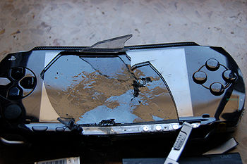

PSP
 De: La Frikipedia, la enciclopedia extremadamente seria.
De: La Frikipedia, la enciclopedia extremadamente seria.
| De la serie Consolas de videojuegos:
|
| PSP
|
|
|
| El único prototipo de PSP del mundo
|
|
| Nombre
|
PSP
|
| Otros nombres
|
Play Station Portatil, Psp... Psp.
|
| Compañía creadora
|
Noentiendo
|
| Principales títulos
|
GTA Vice city stories city y el otro, Socom FTB2 (aqui solo mola el modo online), FIFA 09...
|
| Otros usos
|
Mataperros
|
| Notas
|
Mola más que el DS
|
La PSP (Portátil Sólo Parcialmente) es la respuesta de Sony al Nientiendo De Ése de Noentiendo.
Características Generales
Nueva PSP color blanco fantasia, a la venta en su besbui mas cercano
Aspecto
- Su diseño siguió las pautas del siglo XXI (a pesar de haber sido diseñada durante la IIª guerra mundial, de ahí viene que sea casi indestructible),es enorme , necesitas bolsillos de elefante para poder llevar uno. Superficie de Teflón antiadherente (Black PSP). También existe la PSP de cerámica, por eso el Bufon se compra la mierda que además de pasarla por los aeropuertos sin que la vean, la puedes limpiar con Cristasol® y ademas casi siempre tiene un pixel muerto
- Manejo: Posee Cuatro botones, dos gatitos, un redondel supuestamente analógico, una cruceta incomoda que no marca diagonales (Apta para jugar al Strit Fistro o al Bukodai 5)
Especificaciones técnicas
- Procesador: 333 chinos y 32/64 taiwaneses haciendo cálculos dentro.
- Pantalla: Una pantalla ultra rallable de Tifiti con Píxels Muertos 5.2® (Se dice que existen algunas unidades defectuosas que no traen estos Píxels Muertos 5.2®, la puedes descambiar en el Corte Inglés más próximo dando “el cambiazo”). La PSP NO tiene pantalla táctil: No se puede tocar por que su dueño te endiña un cate.
- Sonido: Según la última convención sobre Contaminación acústica, la PSP no alcanzaría a ser escuchada a más de 20 centímetros de ella a volumen máximo y sin ruido ambiental, suerte que en España, incluían unos cascos que se escuchaban aún menos (para que te dañasen los oídos en el intento de escuchar algo)
- Conectividad: Puerto de infrarrojos para cambiar los canales de la tele, WiFi para jugar contra cualquier persona del planeta y parte del Sistema Solar (si consigues descifrar su complicado código morse).
- Memoria:
- En un intento por la normalización de un único formato standard, Cedel, pero menos que una Tostada.
- En otro intento, Sony saca La MicroStick Dioni (Su tamaño es inversamente proporcional al precio). En esas MS, puedes meterle Jomebriu (véase más abajo), Mp3, video etc. ¡¡E incluso puedes reproducirlos!!
- Batería: 3 misles aire-aire, 4 aire-tierra, 30 cohetes y 2 tierra-aire.
- Peso: Más de un cuarto de kilo (Más que la Dual Screen)
- Fundas: Super Guarras dejaron de ser servibles cuando los aniquiladores de sony decidieron remodelarlas y hacer su nueva consola con el plan de dejar de usar no solo este accesorio sino cientos de ellos.
- Lector de huellas digitales incluido, puede identificar a un criminal rapidamente,
- Instrucciones para joderla: antiguamente era tan fácil como intentar piratearla (CFW), tunearla (flashear f0) o actualizarla (FW Sony) sin tener ni puta idea o sacando la batería, pero ahora gracias a los amigos frikis que te la piratean gratis y al dios de la scene Dark_AleX es bastante más difícil, aún así si quieres jodérsela permanentemente a un amigo basta con dañar la NAND (concretamente el idstorage) a través del Dc5.
Nota: si no te has enterado de algo deja de estudiar y métete en un puto foro de PSP.
La intrigante historia PeeSePiana
Una firmwarra en toda regla
Tras el nacimiento de la PSP (el PSP en latinoamerica), y la costumbre de Sony de dejar boquetes abiertos por donde meter todos esos barcos piratas llenos de polizones (llamese Jomebriu)y los intentos por cerrar dichos agujeros...
Episodio I - Las Firmawarras
Una firmawarra es el cerebro de la PSP, que dentro tiene firmawarricitos, pues bueno eso ya es
otra historia. Pues del nivel de la firmawarra depende la inteligencia de tu PSP. En japón apareció
con la firmawarra unopuntocero, usease mediolela, la cual permitía cargar todo tipos de cosas, incluso se llegó a cargar un pantallazo azul, y claro lo más importante,aprovechar su enorme potencial, entonces tuvo que sacar una versión claramente mejorada que impedía hacer más útil ese bichito, la llamada unopuntocinco que también permitió, pero encontraron otro boquete, después la unopuntocincuentixx, la dospuntocero etc etc etc.
Episodio II – Las fuerzas rebeldes
En España apareció la PSP un año delespués que en el resto d mundo (por lo menos ese fue el tiempo que nos la ocultaron), hubo que actuar rapidamente para podera usar las copias de seguridad de nuestros juegos originales comprados con nuestro dinero. En los intentos de las fuerzas rebeldes contra el Imperio Sony par meter Jomebriu, se le dió un nuevo uso a este cacharrito: El PiSaPapeles de diseño, no servia para nada, pero adornaba un montón. Más tarde, el Imperio Sony intentó contraatacar sacando una nueva versión de firmwarra, cosa que fué un fracaso del Imperio Sony ya qué los Rebeldes se hicieron más fuertes y más numerosos y dark parkalex,con la ayuda total de nuestro dios Mario, creo panchorra, y ningúna pesepé volvió a morir.
Episodio III - "Los custom firewwarrras"
Actualmente las PSP estan siendo dotadas con unos ingeniosos numeros hexadecimales y militonicos que se graban en el "Chip controlador del puto mundo" llamado comunmente FLASH con los cuales un rebelde puede tener el ultimo firewwarra y cargar sus copias de seguridad burlando al imperio. A pesar de todo, la consola de Sorny le da mil vueltas a la favorita de los gitanos (nintendo de ese).
Los juegos
Por culpa de Indiana Parapapoyas (1880-2019), hijo de John Parapapoyas, que al no haber alcanzado la fama de Harrison ForGuiul, quiso vengarse de esta manera; la predicción se cambió así: La PSP tendrá Guiul de Juegos de coches y de dudosa calidad.
Piratear la PSP es un acto muy arriesgado.
 El brick, otro riesgo que se corres si pirateas la PSP
Los juegos de la PSP
- nidforespid horse power los mejores vehículos del siglo xvii
- pedobears el juego solo para japoneses en que eres un pedobear y violas
- Luminio (Juego de cubos de aluminio adictivo)
- Provolushion (El juego de los Cani, por excelencia)
- Mercurio (Juego en java para PSP)
- Burnaut
- Nidforespid
- BigTurismo (Próximamente)
- Gordof War Cheinsofolimpus
- Collin Powell Rally
- Twister Metal
- Nidforespid 2
- Burnaut 2
- wipiut
- sukom
- pesepeysuojete
- Juice Tunning
- GTA (Versión capada para PSP, pero todos dicen que es el mejor)
- Juego de coches 10
- Juego de coches 11
- Juego de coches 12
- juego de coches 12 2
- ...
- Juego de coches N
- Juego de coches(K) por hipotesis de induccion se cumple tambien para Juego de coches(K+1) y la propiedad se cumple para todo N perteneciente a los naturales.
- Dilley max portabl
- Dilley max portabl 2
- Dilley max portabl edición clasicuai
- Dilley max portabl edición cuadrado negro
- Dilley max portabl edición fiebre
- Dilley max portabl version internacional (la misma cosa que el djmax portabl pero en ingles)
- Dilley max portabl edición la venganza de los wombats
- Patapatapatapon
- Patapatapatapon 2
- Patapatapatapon 3
- GTA chinatown wars (una copia un poco mejor echa del juego del dual screen)
- Naruto ultmate minja heroes 1,2,3,4,5.(el mismo juego pero con otra portada)
Algunos de los mejores juegos
Aqui algunos de los juegos que si valdrian la pena comprarlos o bajartelos da =... En Metal Gear Portable ¡Ops! nos cuentan el incidente que provocó el cambio de look de Solid Snake
- GTA Vice city stories, disfruta de la ciudad del vicio en todos sus aspectos, vete de putas, trafica con drojas, roba vehiculos, apaliza/atropella/acribilla/masacra a inocentes para divertirte... ¡ah! y si te queda tiempo puedes pasarte el juego.
- FIFA 06,07,08,09,010,011,012,013,014,015,016,017,018,019,020,021...
- Monster Hunter FREE Doom2, gratuíto, como bien se indica en el título.
- Petz, trata sobre la dura vida de las mascotas y su lucha para sobrevivir en un mundo lleno de drojas, prostitución animal y perreras.
- Manhuntz 2, juego en que criamos monisimos asesinos psicopatas desde cachorros.
- Final Fantasy VII Crisis Core, o simplemente OMG para los
frikis fans de FFVII, cuenta la historia de como Cloud le robó el cuchillo a Pyramid Head.
- Final Fantasy Disisidia, un gran deseo cumplido para muchos, poder dar de hostias a los afeminados, emos, estupidos, etc. personajes de la saga.
- Goz of uar, kR@tº$ continúa con su periplo con el objetivo de cagarse en numerosos dioses.
- Metal Gear portable !Ops¡
- Need for Speed, nos introduce en el mundo de los traficantes de speed que usan las carreras ilegales como tapadera.
- Putapon , Putapon 2 y Putapon 3
- Sailen Gil Origins cuenta los hechos anteriores a que Pedrito Masón llegara a Sailen Gil, siendo el protagonista un Borracho/Pedófilo/camionero llamado Travesti "Travis" Grady que despacha a los monstruos a Hostia limpia.
por mencionar algunos!
Lucifer está más cerca de dominar el mundo con esta Cosa, ya que su Guifi incorporado le permite conectarse a Interné, mangando del vecino.
|
|
 Shooter Shooter
 Terror Terror
 Velocidad Velocidad
 Rol Rol
 Estrategia Estrategia
 Aventuras Aventuras
 Fight! Fight!
 Clásicos Clásicos
 Deportivos Deportivos
 Aventura gráfica Aventura gráfica
 Novela visual Novela visual
 Personajes de videojuegos Personajes de videojuegos
|
Autor(es):
- Krusher
- Nexo
- Polizon
- Bangirasu
- Hari Seldon
- ERbIeJo
- Viento
- Khazike Khashondo
- NoxBand91
- Erazor
Frikipedia 2005-2016, Licencia
GFDL 1.2 - Extraído por FrikiLeaks